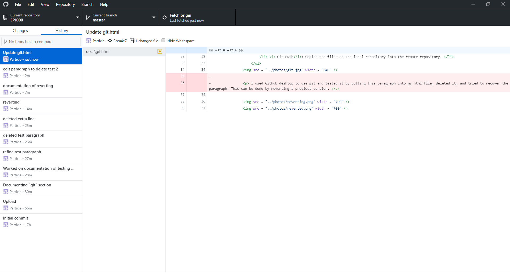
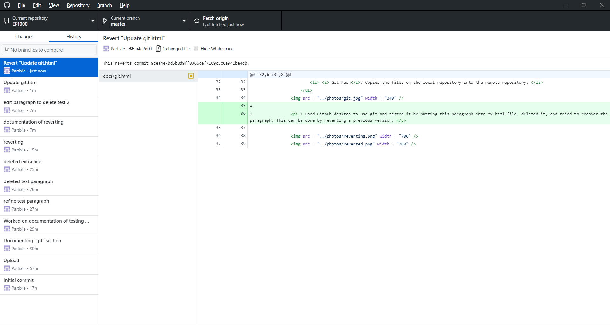

Git is a version control system which allows past revisions of your HTML code to be recorded, and can be retrieved easily when needed. It also makes collaborating on a project with a team of different people much easier, where each member work on a version of the project. Editing a HTML file on your desktop makes a new version of your project. This project can be then pushed into the Remote Repository where changes is reflected on the website. Git also allows user to retrieve a repository on the web and edit it locally. This can be done with commands.
- Git Clone: Make a copy of an existing website and saves it in your hard drive.
- Git Pull: Bring down a current version of the remote repository to work on it.
- Git Add: Add files from your desktop into the staging area.
- Git Commit: Commit changes made into the local repository.
- Git Push: Copies the files on the local repository into the remote repository.

I used Github desktop to use git and tested it by putting this paragraph into my html file, deleted it, and tried to recover the paragraph. This can be done by reverting a previous version.
 